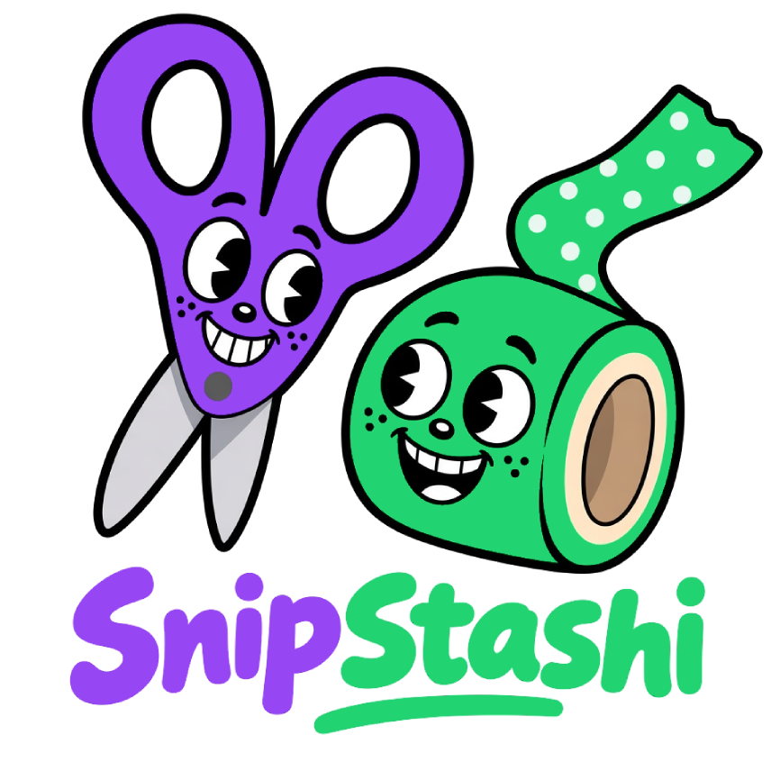
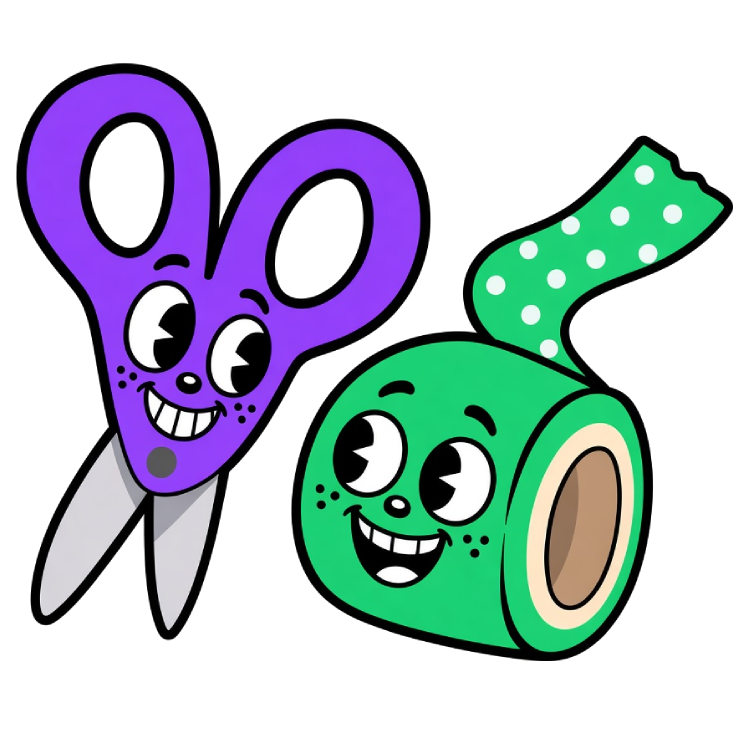

SnipStashi vazio
Toque em “+” ou selecione um texto em qualquer página e use o botão direito → Salvar no SnipStashi.
Interface limpa, sem texturas nem ornamentos
Conecte o Drive para sincronizar snips entre aparelhos. Sem conexão, tudo continua só neste Chrome.
Exporte um arquivo JSON para não perder snips se o Chrome limpar dados, você trocar de PC ou reinstalar a extensão.
Essa ação é irreversível. Todos os itens e tags salvos serão apagados permanentemente — não há como desfazer. Se ainda não tiver, exporte um backup antes.